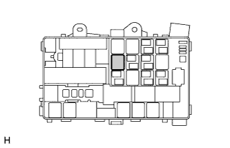

RELAY (for Rear Air Conditioning System) > ON-VEHICLE INSPECTION |
| 1. DISCONNECT CABLE FROM NEGATIVE BATTERY TERMINAL |
| 2. REMOVE REAR COOLER RELAY |
 |
Remove the rear cooler relay from the engine room relay block.
| 3. INSPECT REAR COOLER RELAY |
 |
Measure the resistance of the relay.
| Tester Connection | Specified Condition |
| 3 - 4 | Below 1 Ω |
| 3 - 5 | 10 kΩ or higher |
| 3 - 4 | 10 kΩ or higher (Battery voltage is applied to terminals 1 and 2) |
| 3 - 5 | Below 1 Ω (Battery voltage is applied to terminals 1 and 2) |
| 4. INSTALL REAR COOLER RELAY |
Install the rear cooler relay to the engine room relay block.
| 5. CONNECT CABLE TO NEGATIVE BATTERY TERMINAL |